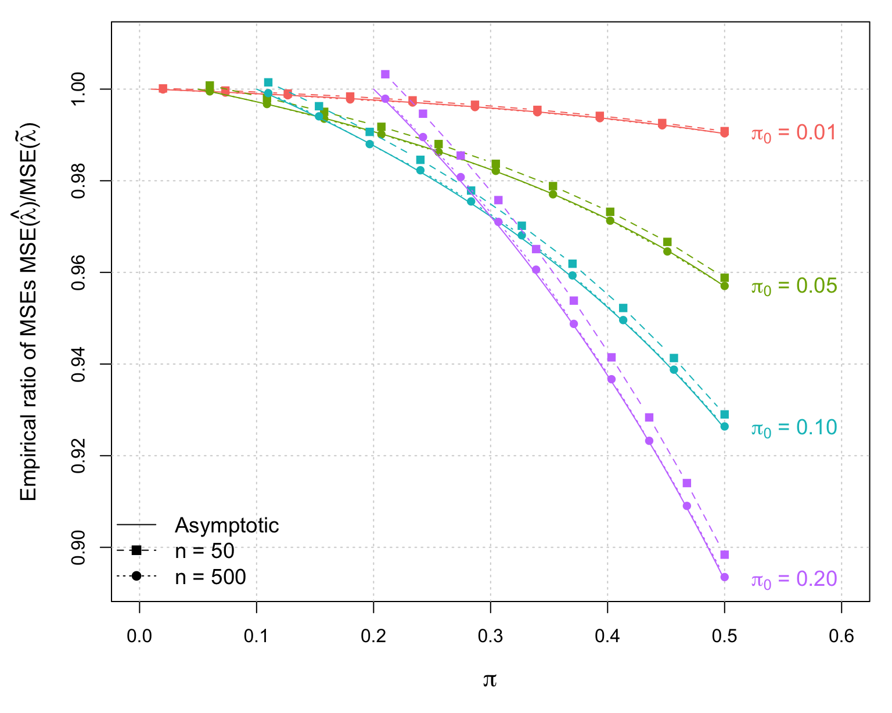
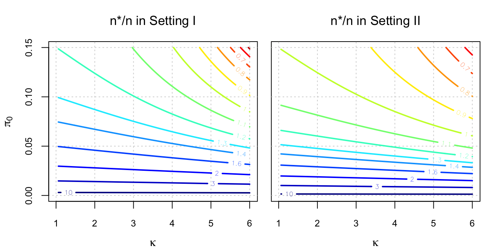
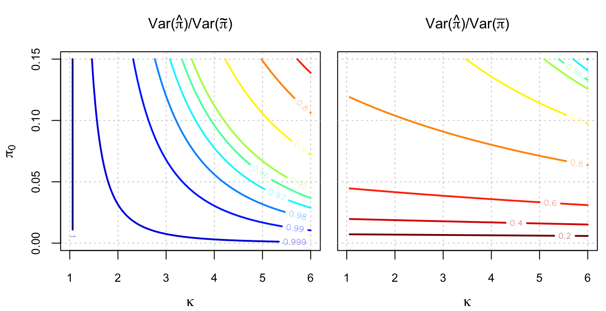

figures.Rmd# Simulation setting pi1 = c(0.01, 0.05, 0.1, 0.2) B = 10^6 n = 50 k = length(pi1) d = 10 result1 = matrix(NA, k, d) for (i in 1:k){ pi2 = seq(from = pi1[i]+0.01, to = 0.5, length.out = d) inter_MLE = inter_modif = rep(NA, B) for (j in 1:d){ lambda = pi2[j]/pi1[i] for (b in 1:B){ set.seed(b) # Samples R2 = rbinom(n = 1, size = n, prob = pi2[j]) R1 = rbinom(n = 1, size = R2, prob = 1/lambda) inter_MLE[b] = (n - R2)/(n - R1) + (R2 - R1)/(pi1[i]*(n - R1)) inter_modif[b] = 1 + (R2 - R1)/(pi1[i]*n) } result1[i,j] = sqrt(var(inter_MLE) + (mean(inter_MLE) - lambda)^2)/ sqrt(var(inter_modif) + (mean(inter_modif) - lambda)^2) } } n = 500 result2 = matrix(NA, k, d) for (i in 1:k){ pi2 = seq(from = pi1[i]+0.01, to = 0.5, length.out = d) inter_MLE = inter_modif = rep(NA, B) for (j in 1:d){ lambda = pi2[j]/pi1[i] for (b in 1:B){ set.seed(b) # Samples R2 = rbinom(n = 1, size = n, prob = pi2[j]) R1 = rbinom(n = 1, size = R2, prob = 1/lambda) inter_MLE[b] = (n - R2)/(n - R1) + (R2 - R1)/(pi1[i]*(n - R1)) inter_modif[b] = 1 + (R2 - R1)/(pi1[i]*n) } result2[i,j] = sqrt(var(inter_MLE) + (mean(inter_MLE) - lambda)^2)/ sqrt(var(inter_modif) + (mean(inter_modif) - lambda)^2) } } pi1 = c(0.01, 0.05, 0.1, 0.2) k = length(pi1) n = 10^3 e = matrix(NA, k, n) for (i in 1:k){ pi2 = seq(from = pi1[i], to = 0.5, length.out = n) e[i,] = 1/(1 + (pi1[i]*(pi2 - pi1[i])/(1 - pi2))) } gg_color_hue <- function(n) { hues = seq(15, 375, length = n + 1) hcl(h = hues, l = 65, c = 100)[1:n] } cols = gg_color_hue(4) par(mfrow = c(1,1), mar = c(5,5,1,1)) plot(NA, xlim = c(0, 0.6), ylim = c(min(e), 1.01), xlab = " ", ylab = " ") grid() mtext(expression(pi), side = 1, line = 3, cex = 1.35) mtext(expression(paste("Empirical ratio of MSEs MSE(",hat(lambda),")/MSE(",tilde(lambda),")")), side = 2, line = 3, cex = 1.15) for (i in 1:k){ pi2 = seq(from = pi1[i], to = 0.5, length.out = n) lines(pi2, e[i,], col = cols[i], lwd = 1) pi2 = seq(from = pi1[i]+0.01, to = 0.5, length.out = d) lines(pi2, (result1[i,])^2, pch = 15, col = cols[i], lty = 2, type = "b") lines(pi2, (result2[i,])^2, pch = 16, col = cols[i], lty = 3, type = "b") } text(0.56, e[1,n], expression(paste(pi[0], " = 0.01")), col = cols[1], cex = 1.15) text(0.56, e[2,n], expression(paste(pi[0], " = 0.05")), col = cols[2], cex = 1.15) text(0.56, e[3,n], expression(paste(pi[0], " = 0.10")), col = cols[3], cex = 1.15) text(0.56, e[4,n], expression(paste(pi[0], " = 0.20")), col = cols[4], cex = 1.15) legend("bottomleft", c("Asymptotic", "n = 50", "n = 500"), bty = "n", col = 1, lwd = 1, lty = 1:3, pch = c(NA, 15, 16), cex = 1.15)

library(plot3D) n = 10^2 pi1 = seq(from = 0, to = 0.15, length.out = n) lambda = seq(from = 1.01, to = 6, length.out = n) n_star_coef = n_star_coef2 = matrix(NA, n, n) alpha1 = 0.01 beta1 = 0.03 beta2 = 0.08 Delta1 = 1 - alpha1 - beta1 for (i in 1:n){ for (j in 1:n){ pi2 = lambda[j]*pi1[i] n_star_coef[i,j] = pi2*(1 - pi2)/((pi2 - pi1[i])*(1 + pi1[i] - pi2)) var1 = (pi2*(1 - beta2))*(1 - pi2*(1 - beta2)) var2 = ((pi2*(1 - alpha1)*(1 - beta2) - pi1[i]*(1 - beta2)*Delta1)*(1 + pi1[i]*(1 - beta2)*Delta1 - pi2*(1 - alpha1)*(1 - beta2)))/((1 - alpha1)^2*(1 - beta2)^2) n_star_coef2[i,j] = var1/var2 } } cols = gg_color_hue(3) par(mfrow = c(1,2), mar = c(0.5,0.5,0.5,0.5), oma = c(3,3,2.5,0)) plot(NA, xlim = range(lambda), ylim = range(pi1), xlab = " ", ylab = " ", ann = FALSE, axes = FALSE) box() grid() contour2D(y = pi1, x = lambda, z = n_star_coef, lwd = 2, colkey = FALSE, levels = c(10,3,2, 1.6, 1.4, 1.3, 1.2, 1.1, 1, 0.9, 0.8, 0.7, 0.6, 0.5, 0.4), axes = FALSE, add = TRUE) axis(2, cex.axis = 0.8) axis(1, cex.axis = 0.8) mtext("n*/n in Setting I", side = 3.5, line = 1, cex = 1.1) mtext(expression(kappa), side = 1, line = 2.4, cex = 1) mtext(expression(pi[0]), side = 2, line = 2.4, cex = 1) plot(NA, xlim = range(lambda), ylim = range(pi1), xlab = " ", ylab = " ", ann = FALSE, axes = FALSE) box() grid() contour2D(y = pi1, x = lambda, z = n_star_coef2, lwd = 2, colkey = FALSE, levels = c(10,3,2, 1.6, 1.4, 1.3, 1.2, 1.1, 1, 0.9, 0.8, 0.7, 0.6, 0.5, 0.4), axes = FALSE, add = TRUE) axis(1, cex.axis = 0.8) mtext("n*/n in Setting II", side = 3.5, line = 1, cex = 1.1) mtext(expression(kappa), side = 1, line = 2.4, cex = 1)

library(plot3D) n = 10^2 pi1 = seq(from = 0, to = 0.15, length.out = n) lambda = seq(from = 1.01, to = 6, length.out = n) eff_naive = eff_modif = matrix(NA, n, n) for (i in 1:n){ for (j in 1:n){ pi2 = lambda[j]*pi1[i] eff_naive[i,j] = (pi2 - pi1[i])*(1 - pi2)/(pi2*(1 - pi2))*(1/(1 - pi1[i])) eff_modif[i,j] = 1/(1 + (pi1[i]*(pi2 - pi1[i]))/(1 - pi2)) } } cols = gg_color_hue(3) par(mfrow = c(1,2), mar = c(0.5,0.5,0.5,0.5), oma = c(3,3,2.5,0)) plot(NA, xlim = range(lambda), ylim = range(pi1), xlab = " ", ylab = " ", ann = FALSE, axes = FALSE) box() grid() contour2D(y = pi1, x = lambda, z = eff_modif, lwd = 2, colkey = FALSE, levels = c(1, 0.999, 0.99, 0.98, 0.97, 0.96, 0.95, 0.9, 0.8, 0.6, 0.4, 0.2), axes = FALSE, add = TRUE) axis(2, cex.axis = 0.8) axis(1, cex.axis = 0.8) mtext(expression(paste("Var(",hat(pi), ")/Var(", tilde(pi), ")")), side = 3.5, line = 1, cex = 1) mtext(expression(kappa), side = 1, line = 2.4, cex = 1) mtext(expression(pi[0]), side = 2, line = 2.4, cex = 1) plot(NA, xlim = range(lambda), ylim = range(pi1), xlab = " ", ylab = " ", ann = FALSE, axes = FALSE) box() grid() contour2D(y = pi1, x = lambda, z = eff_naive, lwd = 2, colkey = FALSE, levels = c(1, 0.999, 0.99, 0.98, 0.97, 0.96, 0.95, 0.9, 0.8, 0.6, 0.4, 0.2), axes = FALSE, add = TRUE) axis(1, cex.axis = 0.8) mtext(expression(paste("Var(",hat(pi), ")/Var(", bar(pi), ")")), side = 3.5, line = 1, cex = 1) mtext(expression(kappa), side = 1, line = 2.4, cex = 1)
